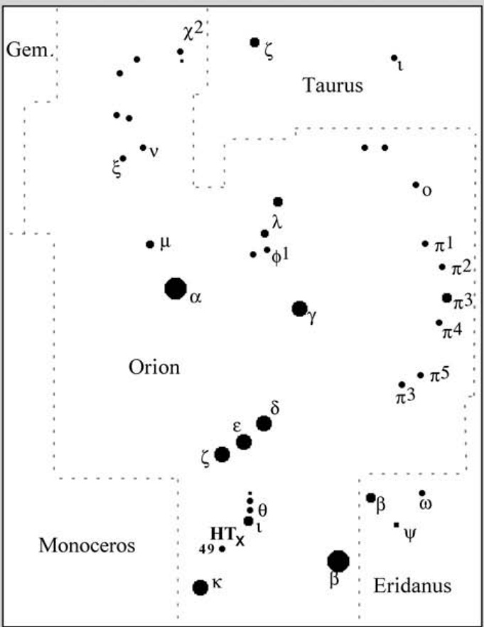

钥匙孔星云 · Keyhole Nebula (NGC 1999)

历史与发现 (History and Discovery)
The Keyhole Nebula, officially designated NGC 1999, is one of the most distinctive dark nebulae within the vast Orion Molecular Cloud Complex. First catalogued by John Herschel in 1835, this celestial curiosity has captivated astronomers for nearly two centuries with its mysterious appearance and the enigmatic dark region at its heart.
钥匙孔星云，正式编号为NGC 1999，是猎户座巨大分子云复合体中最独特的暗星云之一。1835年由约翰·赫歇尔首次编入星表，这个天体奇观以其神秘的外观和中心神秘的黑暗区域，近两个世纪以来一直吸引着天文学家。
"The Keyhole Nebula is a region of dark dust clouds located in the constellation Orion. It is called the Keyhole because of its peculiar shape."
“钥匙孔星云是位于猎户座的一个黑暗尘埃云区域。它之所以被称为钥匙孔，正是因为其奇特的形状。”
位置与关联 (Location and Associations)
NGC 1999 sits dramatically close to the famous Orion Nebula (M42), separated by merely 0.5 degrees in the sky. It lies at a distance of approximately 1,500 light-years from Earth, placing it firmly within the same star-forming region as its more famous neighbor. The nebula is illuminated by the B-type star V380 Orionis, which dominates the central cavity of this reflection nebula.
NGC 1999 戏剧性地坐落在著名的猎户座大星云（M42）附近，天空中仅相距0.5度。它距离地球约1,500光年，坚定地位于与其更著名的邻居相同的恒星形成区域中。这团星云由B型星V380 Orionis照亮，该星主导着这个反射星云中心空腔。
钥匙孔之谜 (The Mystery of the Keyhole)
The most striking feature of NGC 1999 is undoubtedly the conspicuous dark region resembling a keyhole, which appears as an absence of nebulosity against the glowing background. For decades, astronomers debated what created this peculiar dark patch.
NGC 1999 最引人注目的特征无疑是这个引人注目的黑暗区域，其形状酷似钥匙孔，在发光的背景上呈现出一片空缺。几十年来，天文学家一直在争论是什么创造了这个奇特的暗斑。
"In November 1999, the Hubble Space Telescope captured a stunning image of NGC 1999, revealing new details about the Keyhole's true nature."
“1999年11月，哈勃太空望远镜捕捉到了NGC 1999的惊人图像，揭示了钥匙孔真正本质的新细节。”
卓越观测发现 (A Remarkable Observational Discovery)
In a groundbreaking observation, astronomers discovered that the dark "keyhole" region is not actually empty space or a hole in the nebula. Instead, it is a dense cloud of dust and gas so thick that it appears completely black against the illuminated portions of the nebula. This discovery fundamentally changed our understanding of the Keyhole Nebula's structure.
在一项开创性的观测中，天文学家发现黑暗的“钥匙孔”区域实际上并非空旷的太空或星云中的空洞。相反，它是一团密度极高的尘埃和气体云，在星云发光部分的映衬下呈现完全漆黑的外观。这一发现从根本上改变了我们对钥匙孔星云结构的理解。
| 参数 Parameters | 数值 Value |
|---|---|
| NGC编号 | NGC 1999 |
| 类型 | 反射星云 / Reflection Nebula |
| 距离 | ~1,500 光年 / Light-years |
| 所在星座 | 猎户座 / Orion |
| 照明恒星 | V380 Orionis (B型星) |
| 发现者 | John Herschel (1835) |
| 视直径 | ~2角分 |
| 相关天体 | 猎户座大星云 M42 |
结构与成分 (Structure and Composition)
The Keyhole Nebula represents a region of active star formation within the Orion Molecular Cloud. The dark region, shaped like a keyhole, is composed of extremely dense molecular material that blocks all visible light from stars behind it. This makes it appear as a silhouette against the nebula's luminescent walls.
钥匙孔星云代表了猎户座分子云内一个活跃的恒星形成区域。钥匙孔形状的黑暗区域由极稠密的分子物质组成，能够阻挡来自其后方恒星的所有可见光。这使其在星云发光的壁面上呈现为一个剪影。
"The dark nebula contains thick concentrations of interstellar dust that absorb and scatter light waves."
“这团暗星云含有浓密的星际尘埃浓度，会吸收并散射光波。”
观测体验 (Observing Experience)
For amateur astronomers, observing NGC 1999 through a moderate telescope presents a fascinating challenge. The nebula's proximity to the brilliant Orion Nebula offers an excellent opportunity for a wide-field observation session. When you center your view on the bright M42 and shift slightly eastward, the Keyhole Nebula comes into view as a subtle dark patch against the surrounding stellar field.
对于业余天文学家来说，通过中等口径望远镜观测NGC 1999是一个迷人的挑战。这团星云靠近璀璨的猎户座大星云，为宽视场观测提供了绝佳机会。当您将视野中心对准明亮的M42并稍微向东偏移时，钥匙孔星云会在周围恒星场的映衬下显现为一个隐约的暗斑。
The visual impact is most striking when using moderate magnification that allows both M42 and the Keyhole to remain in the same field of view. The contrast between the brilliant emission nebulosity of the Great Orion Nebula and the dark keyhole-shaped void creates a memorable celestial tableau that has inspired observers for generations. Under dark skies with excellent transparency, the subtle boundary between the illuminated nebula and the impenetrable darkness of the keyhole region becomes discernible, revealing the true three-dimensional nature of this cosmic phenomenon.
使用中等倍率观测效果最为惊人，这样可以让M42和钥匙孔同时保持在同一视野内。猎户座大星云璀璨的发射星云与钥匙孔形状的黑暗空洞之间的对比，创造了一幅令人难忘的天文图景，激励着历代观测者。在黑暗天空和极佳透明度条件下，发光星云与钥匙孔区域不可穿透的黑暗之间的微妙边界变得清晰可辨，揭示了这一宇宙现象真实的三维本质。
As you continue to study this region, you might notice faint streamers of nebulosity extending from the main structure—these are the outer reaches of the Orion Molecular Cloud being sculpted by stellar winds from the young stars embedded within. Each observation reveals new subtleties, and the Keyhole Nebula rewards patient observers with an ever-deepening appreciation for the complex interplay of light and shadow in stellar nurseries.
当您继续研究这个区域时，您可能会注意到从主体结构延伸出的微弱星云流——这些是猎户座分子云的外缘，正被嵌入其中的年轻恒星产生的恒星风塑造。每次观测都会揭示新的微妙之处，钥匙孔星云以耐心观察者的不断深化的欣赏作为回报，欣赏恒星育儿室里光与影的复杂交织。
To be continued...
待续...
🔒 受限于篇幅，本文仅展示部分样章。O'Meara 先生完整的观测手记、实测数据及未公开的独家配图，请参阅原著双语典藏版。
👉 立即在闲鱼获取《DEEP-SKY COMPANIONS》中英双语高清典藏版